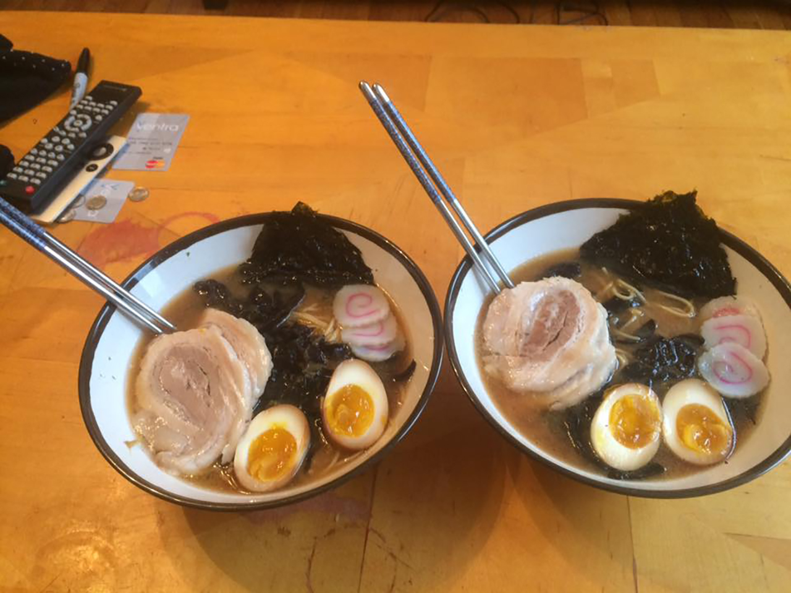

Shirodashi Ramen

Description
This recipe is to make traditional ramen, a classic japanese dish which contains a broth often made from bone, a meat, an egg, noodles and a choice of vegetables.
Ingredients
- noodles
- bone broth
- 1 egg
- pork
- vegetables
Steps
- Let the bone broth sit over night in the water to marinade
- Place the pork meat in the oven at 200c for 30 minutes or until tender
- Boil the egg in a pan of boiling water until the yolk is half cooked and then place in a bowl of cold water
- Chop your vegetables of choice and prepare to cook
- Cook the noodles in a pan of boiling water until they are soft
- Combine all cooked ingredients in a bowl and serve